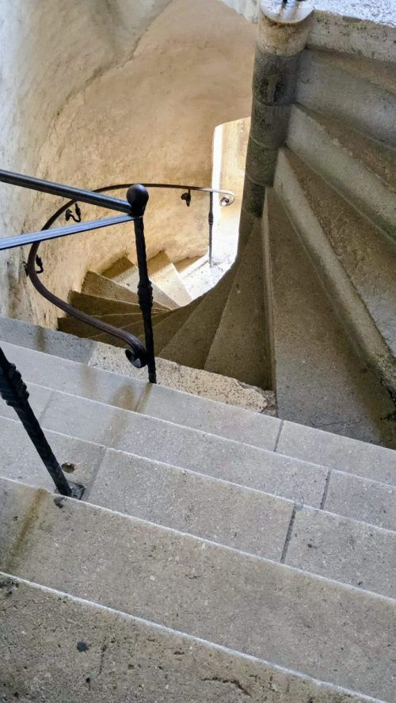
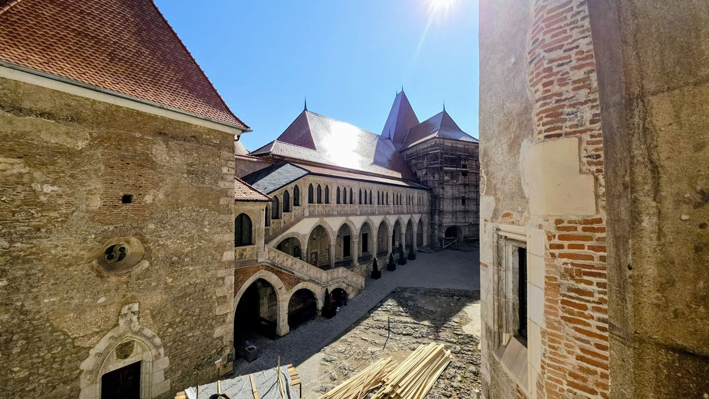
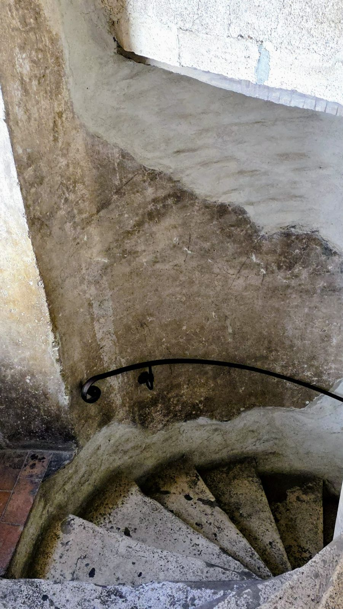
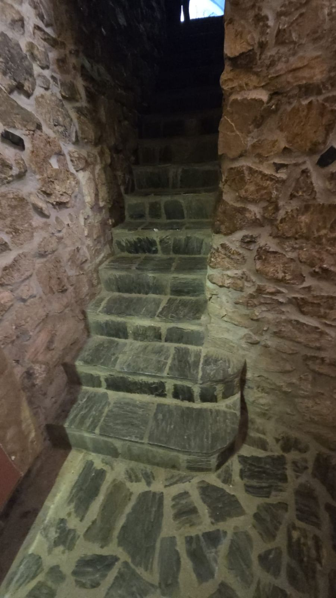
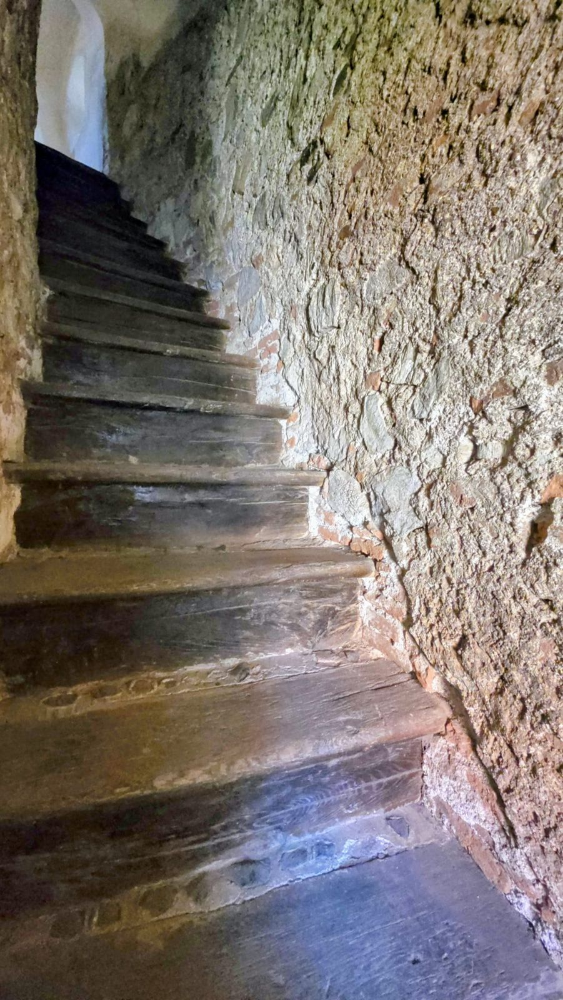
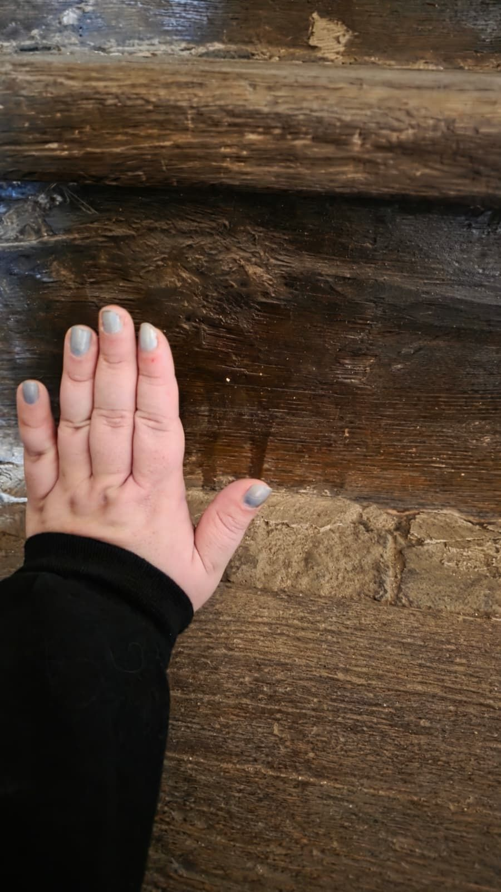
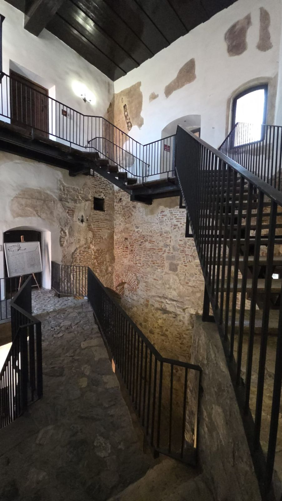
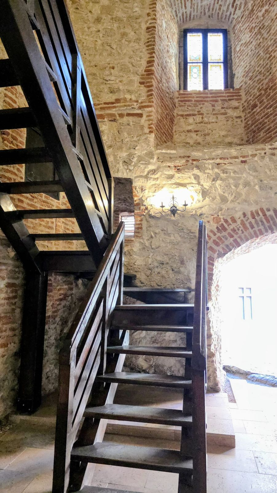
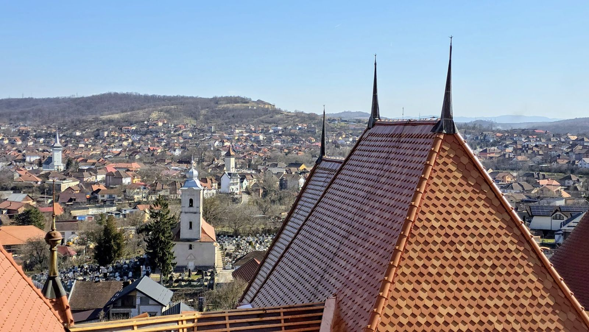

Journey 02 · Hunedoara Note 3 of 12 Field Note
Climbing Corvin Castle
Is that sweat or tears?

One thing that becomes immediately clear when visiting Corvin Castle: Medieval architects did not design staircases with modern tourists in mind.
The castle is beautiful. Dramatic towers, winding corridors, wide stone halls, and balconies that overlook the entire town of Hunedoara. I mean… just look at it! Majestic! Iconic!

But between halls and rooms and grand courtyards lie what feels like an endless number of stairs.
And not normal stairs. You know, stairs that line up like smart little soldiers, identical in rank and file, broken up with handy foyers for resting, with banisters to hold onto for balance and to catch yourself after a bad step.



No, not those kinds of stairs at all.
These are medieval stairs, which appear to have been built according to the principle that every step should be slightly different from the last.
Some are tall. Some are shallow. Some are almost triangular. A few are actually loose, because who doesn’t love a little adrenaline rush when you think you’re about to tumble down 47 flights of stone steps like a poorly set off slinky. None of them appear to follow a consistent pattern. Just when you think you’ve found a rhythm, the next step is two inches taller and your knees officially begin protesting. At least two flights of stairs required me to high-step in order to climb them. I should have worn rappelling gear for the climb.


Climbing the towers means spiraling upward through narrow stone staircases where the steps have been worn smooth by centuries of feet. Soldiers once ran up and down these same passages carrying armor and weapons. Messengers likely raced through them with news from distant battlefields. Servants carried everything from water to dishes to candles and chamber pots. They all had calves of steel and thighs of iron.
Today the people climbing them mostly carry phones and water bottles.

After several towers, a courtyard or two, and more staircases than I was prepared for, one thing became clear.
The real defensive strategy of Corvin Castle may not have been its walls or battlements.
It may have simply been the stairs.
By the time an invading army reached the top, their calves would have surrendered long before the defenders did.
Aside from the excellent workout and general strike that was being organized between my calves, knees, ankles and toes (which had accidentally kicked more unexpectedly tall stair noses than they would have liked), all the stairs had one great advantage that made it worth all the sweat, confusion, mild vertigo and screaming thighs:

The view was absolutely beautiful.

Originally published at fieldnotesfromabroad.com/2026/03/09/field-notes-climbing-corvin-castle/